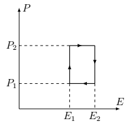
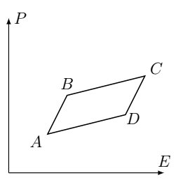

Y24 (2024) — English translation
Ferroelectrics are substances that, at a sufficiently low temperature, have non-zero electric polarization in a zero external electric field. In this respect, ferroelectrics are similar to ferromagnets, which have a non-zero magnetic moment without an applied magnetic field. This problem will consider the thermodynamic properties of ferroelectrics, in particular the change in temperature with a change in the electric field (the so-called electrocaloric effect). This effect allows the use of ferroelectric films for surface cooling (see figure).
Ferroelectrics are substances that, at a sufficiently low temperature, have non-zero electric polarization in a zero external electric field. In this respect, ferroelectrics are similar to ferromagnets, which have a non-zero magnetic moment without an applied magnetic field. This problem will consider the thermodynamic properties of ferroelectrics, in particular the change in temperature with a change in the electric field (the so-called electrocaloric effect). This effect allows the use of ferroelectric films for surface cooling (see figure).
The state of a ferroelectric is characterized by polarization $\vec{P}$ (dipole moment per unit volume of its substance), as well as by the electric induction vector $\vec{D}$ and electric field strength $\vec{E}$. Further, in the entire problem, we consider a flat ferroelectric sample, the polarization of which is uniform and always directed along the same axis, therefore, instead of vectors, we can use the scalar quantities $P$, $D$, $E$ – projections onto this axis. Consider it known that the change in the volumetric density of electrical energy (including the energy of the electric field and the energy of the polarized matter) has the form $$ dw = E d D. $$Будем рассматривать сегнетоэлектрик постоянного объема $V$, так что он не совершает механической работы. Тогда изменение его внутренней энергии задается выражением $$ dU = \delta Q + V E dD, $$где $\delta Q$ – подведенное в процессе тепло.
Математическое дополнение Рассмотрим функцию двух переменных $f(x,y)$. Частной производной функции называется производная этой функции по одному из ее аргументов при фиксированном втором аргументе. При вычислениях в термодинамике важно помнить не только по какой переменной производится дифференцирование, но и какая величина остается постоянной. Эту величину обозначают нижним индексом. Так частная производная функции $f$ по $x$ при фиксированном $y$ обозначается как $$\left( \frac{\partial f}{\partial x}\right)_y.$$ Значение производной зависит от того, какая именно величина остается постоянной. В качестве примера рассмотрим некоторое количество идеального одноатомного газа, давление которого является функцией объема и давления. Тогда производные давления по объему при постоянной температуре и при постоянной энтропии $S$ (т.е. в адиабатическом процессе) будут различаться: $$\left(\frac{ \partial p}{\partial V}\right)_T \neq \left(\frac{ \partial p}{\partial V}\right)_S .$$ Пусть некоторая величина $z = z(x,y)$ является функцией двух других. Из этого уравнения можно выразить величины $x = x(y,z)$ и $y = y(x,z)$. Будем считать, что такое выражение единственно. Тогда существует следующее соотношение между частными производными: \[\left( \frac{\partial x}{\partial y}\right)_z \left( \frac{\partial y}{\partial z}\right)_x \left( \frac{\partial z}{\partial x}\right)_y = -1. \tag{1} \] Отметим также, что при дифференцировании при тех же зафиксированных переменных справедливо равенство $$\left( \frac{\partial x}{\partial y}\right)_z = \frac{1}{\left( {\partial y}/{\partial x}\right)_z}.$$
Рассмотрим функцию двух переменных $f(x,y)$. Частной производной функции называется производная этой функции по одному из ее аргументов при фиксированном втором аргументе. При вычислениях в термодинамике важно помнить не только по какой переменной производится дифференцирование, но и какая величина остается постоянной. Эту величину обозначают нижним индексом. Так частная производная функции $f$ по $ x$ при фиксированном $y$ обозначается как $$\left( \frac{\partial f}{\partial x}\right)_y.$$ Значение производной зависит от того, какая именно величина остается постоянной. В качестве примера рассмотрим некоторое количество идеального одноатомного газа, давление которого является функцией объема и давления. Тогда производные давления по объему при постоянной температуре и при постоянной энтропии $S$ (т.е. в адиабатическом процессе) будут различаться: $$\left(\frac{ \partial p}{\partial V}\right)_T \neq \left(\frac{ \partial p}{\partial V}\right)_S .$$
Пусть некоторая величина $z = z(x,y)$ является функцией двух других. Из этого уравнения можно выразить величины $x = x(y,z)$ и $y = y(x,z)$. Будем считать, что такое выражение единственно. Тогда существует следующее соотношение между частными производными: \[\left( \frac{\partial x}{\partial y}\right)_z \left( \frac{\partial y}{\partial z}\right)_x \left( \frac{\partial z}{\partial x}\right)_y = -1. \tag{1} \]
Отметим также, что при дифференцировании при тех же зафиксированных переменных справедливо равенство
$$\left( \frac{\partial x}{\partial y}\right)_z = \frac{1}{\left( {\partial y}/{\partial x}\right)_z}.$$
In this part, the effect of changing the temperature of a ferroelectric under the influence of an electric field is studied from purely thermodynamic considerations.
Further in this part we will consider a sample of a ferroelectric, which has the form of a thin plate placed between the plates of a flat capacitor. The volume of the ferroelectric $V$ can be considered constant, therefore its state is characterized by polarization $P$ and temperature $T$. A ferroelectric can be influenced by adding or removing heat or applying voltage (thereby creating an electric field).
Let a cycle be performed with the ferroelectric (see Fig.), in coordinates $E$, $P$. Determine the total amount of heat received by the ferroelectric per cycle. Express your answer in terms of $E_1$, $E_2$, $P_1$, $P_2$, $V$.

Now consider the ABCD cycle (see figure), which has the form of an infinitesimal parallelogram. Indicate the direction of traversing the cycle in which the amount of heat received by the ferroelectric during the cycle will be positive. Justify your answer.

The following parts of the problem are devoted to proving the identity \[ \left( \frac{\partial S}{\partial E} \right)_T = \left( \frac{\partial P}{\partial T}\right)_E, \tag{2} \] where $S$ is the entropy of a unit volume of the ferroelectric. To do this, consider the cycle from point $A3$, considering the sides of the parallelogram to be infinitesimal sections of isotherms and adiabats. Moreover, which of the sections are isotherms and which are adiabats depends on the parameters of the substance. Since the slope of section $BC$ is less than the slope $AB$, $BC$ will be an isotherm under the condition $$ \left( \frac{\partial P}{\partial E}\right)_T < \left( \frac{\partial P}{\partial E}\right)_S. $$ Будем рассматривать различные случаи. Для определенности везде дальше считаем, что $(\partial P/\partial T)_E < 0$.
Let now the isotherms be the segments $AB$ (temperature $T_1$) and $CD$ (temperature $T_2$).
In order to achieve the strongest effect of changing the temperature of the ferroelectric, it is necessary to use a substance with a large value of the derivative $\left({\partial P}/{\partial T} \right)_E$. It turns out that this derivative is especially large near the phase transition point. As long as the ferroelectric temperature is above the phase transition temperature, its spontaneous polarization is zero, and when it is lower, spontaneous polarization occurs. Let us consider the following ferroelectric model. Let the ferroelectric contain ions of the crystal lattice, which are in the effective potential $$ U(x) = U_0 \left( \frac{a_2}{2} \left( \frac{x}{x_0}\right)^2 - \frac{a_4}{4} \left( \frac{x}{x_0}\right)^4 + \frac{a_6}{6} \left( \frac{x}{x_0}\right)^6\right) $$Для простоты рассматривается одномерная задача, поэтому потенциал зависит только от одной координаты иона, которая отсчитывается от его положения равновесия. Здесь $U_0$ – характерное значение энергии, $x_0$ – характерное смещение иона, $a_4 > 0$, $a_6 > 0$ – безразмерные постоянные, характеризующие форму потенциала, величина $a_2 = \alpha (T - T_с)/T_c$ ($\alpha$ – некоторый коэффициент) характеризует изменение потенциала с температурой. В зависимости от температуры у потенциала могут появляться дополнительные положения равновесия. При этом фактически реализуется то из устойчивых положений равновесия, которому отвечает наименьшее значение потенциала. Если ион находится в положении равновесия с $x = 0$, его вклад в электрический дипольный момент кристалла равен нулю. Если ион находится в положении равновесия с ненулевым $x$, у кристалла возникает спонтанная поляризация. Концентрация ионов в кристалле $n$, заряд одного иона $q$. Для удобства вычислений вы можете использовать безразмерную переменную $y = x/x_0$.
Source: https://pho.rs/p/3851